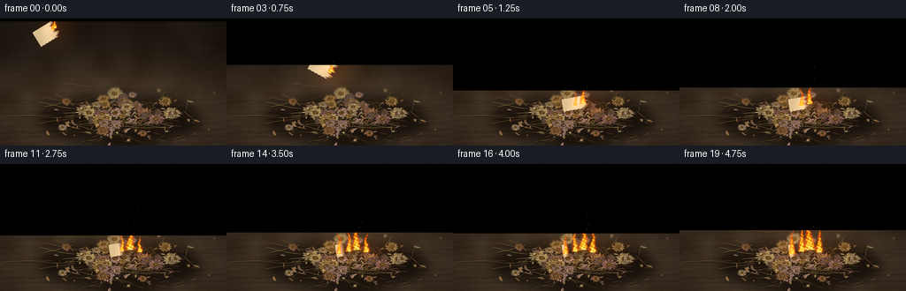
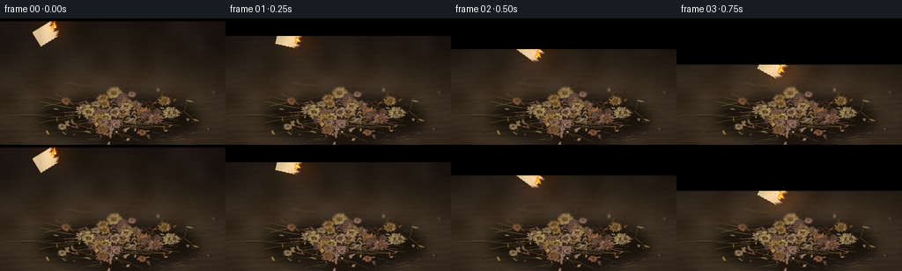
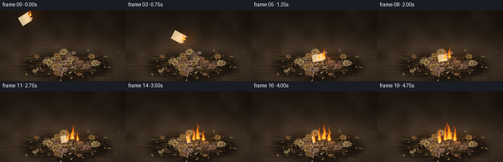

CODING AGENTS AS PIXEL WORLD MODELS
traex/GPT-6.1-Sol · material_0028
点击播放 · 原生 RGB 像素
此结果可播放，但该运行尚未通过最终提交审核。页面展示不代表评测通过。
逐轮保存的候选
回放视频、检查图与代码变化。
每份候选均可单独播放。实际图片检查记录在下方工具轨迹中。
候选 01播放与检查图
点击播放 · 原生 RGB 像素

展开代码变化
--- 上一保存版本
+++ 本次保存版本
@@ -0,0 +1,250 @@
+from pathlib import Path
+import numpy as np
+from PIL import Image, ImageDraw, ImageFilter
+import math
+import artifact_io
+
+ROOT=Path(__file__).resolve().parent
+W,H,S=256,144,3
+WW,HH=W*S,H*S
+rng=np.random.default_rng(7294)
+Y,X=np.mgrid[0:HH,0:WW].astype(float); x=X/S;y=Y/S
+
+def noise_field(w,h,scale,seed):
+ r=np.random.default_rng(seed)
+ a=r.random((max(2,int(h/scale)+2),max(2,int(w/scale)+2)))
+ return np.asarray(Image.fromarray((a*255).astype('uint8')).resize((w,h),Image.Resampling.BICUBIC)).astype(float)/255
+
+# Shallow-focus, low-key timber still life.
+n1=noise_field(WW,HH,75,5); n2=noise_field(WW,HH,12,9)
+light=np.exp(-((x-124)/130)**2-((y-93)/83)**2)
+base=np.zeros((HH,WW,3))
+wood=2*np.sin(y*.91+x*.015+1.8*np.sin(x*.025))+1.5*np.sin(y*3.2+x*.041)
+for c,v in enumerate([51,39,29]):
+ base[:,:,c]=v+light*[21,17,11][c]+(n1-.5)*15+(n2-.5)*3+wood*[1,.7,.45][c]
+# Background blur and fall-off.
+base*= (.57+.43/(1+np.exp(-(y-59)/11)))[:,:,None]
+base+=rng.normal(0,.9,(HH,WW,1))
+scene=Image.fromarray(np.uint8(np.clip(base,0,255)))
+D=ImageDraw.Draw(scene)
+# Wood fissures, faint grain in the foreground.
+for k in range(28):
+ yy=rng.uniform(81,151); xx=rng.uniform(-20,250); length=rng.uniform(10,95)
+ pts=[((xx+t*length/12)*S,(yy+.24*np.sin(t*.6+k))*S) for t in range(13)]
+ D.line(pts,fill=(43,32,24),width=1)
+# The pile's soft contact shadow.
+sh=Image.new('RGBA',(WW,HH));d=ImageDraw.Draw(sh)
+d.ellipse((46*S,86*S,225*S,144*S),fill=(13,8,4,178))
+sh=sh.filter(ImageFilter.GaussianBlur(6*S));scene=Image.alpha_composite(scene.convert('RGBA'),sh).convert('RGB')
+D=ImageDraw.Draw(scene)
+
+# A loose bed of thin, brittle stems.
+for k in range(180):
+ cx=rng.normal(138,36);cy=rng.normal(111,10)
+ length=rng.uniform(12,62);ang=rng.uniform(0,2*np.pi)
+ dx=np.cos(ang)*length;dy=np.sin(ang)*length*.30
+ pts=[((cx+dx*(t/8-.5))*S,(cy+dy*(t/8-.5)+np.sin(t*.6+k)*.5)*S) for t in range(9)]
+ col=np.array([95,75,43])*rng.uniform(.5,1.4)
+ D.line([(px+S,py+S) for px,py in pts],fill=(31,23,14),width=max(1,int(S*.85)))
+ D.line(pts,fill=tuple(col.astype(int)),width=max(1,int(S*rng.uniform(.25,.85))))
+ if k%3==0:
+ D.line([(px,py-.25*S) for px,py in pts],fill=(130,107,67),width=1)
+
+# Petals are individually shaded wrinkled, curved surfaces, not flat cut-outs.
+def petal(im,cx,cy,ang,L,B,col,seed,flatten=.65):
+ r=np.random.default_rng(seed); curl=r.uniform(-.65,.65);phase=r.uniform(0,6.28)
+ ca,sa=np.cos(ang),np.sin(ang)
+ # Screen-space stretched coordinates.
+ ext=L+B*2
+ xa=max(0,int((cx-ext)*S));xb=min(WW,int((cx+ext)*S+2));ya=max(0,int((cy-ext)*S));yb=min(HH,int((cy+ext)*S+2))
+ if xb<=xa or yb<=ya:return
+ gy,gx=np.mgrid[ya:yb,xa:xb].astype(float);gx=gx/S-cx;gy=(gy/S-cy)/flatten
+ u=(gx*ca+gy*sa)/L;v=-gx*sa+gy*ca
+ mid=curl*B*np.sin(np.clip(u,0,1)*np.pi*.9)**2
+ width=B*np.maximum(0,np.sin(np.clip(u,0,1)*np.pi))**.6
+ width*=.85+.1*np.sin(u*35+phase)+.04*np.sin(u*79+phase*2)
+ q=(v-mid)/(width+1e-3)
+ alpha=np.clip((1-np.abs(q))*7,0,1)*((u>0)&(u<1))
+ # Rolled rims, longitudinal veins, uneven aging, raised central rib.
+ shade=.61+.28*np.sqrt(np.clip(1-q*q,0,1))+.17*np.exp(-((q+.3)/.3)**2)
+ shade-=.2*np.exp(-((q-.70)/.17)**2)
+ shade+=.06*np.sin(q*23+u*10+phase)+.035*np.sin(u*67+q*9)
+ shade-=.19*np.clip((u-.76)*4,0,1)
+ grain=r.normal(0,2.2,u.shape)
+ color=np.asarray(col)[None,None,:]*shade[:,:,None]+grain[:,:,None]
+ color+=np.exp(-(q/.09)**2)[:,:,None]*np.array([11,9,6])
+ # Brown scarring in the curled tips.
+ color-=((u>.88)&(np.sin(q*13+phase)>0))[:,:,None]*np.array([15,14,10])
+ arr=np.zeros((yb-ya,xb-xa,4),dtype=np.uint8);arr[:,:,:3]=np.uint8(np.clip(color,0,255));arr[:,:,3]=np.uint8(alpha*255)
+ im.paste(Image.fromarray(arr),(xa,ya),Image.fromarray(arr[:,:,3]))
+
+palette=[[158,120,69],[172,144,95],[143,98,62],[133,96,80],[159,132,97],[106,81,71],[160,124,108]]
+# Fallen leaves and petals scattered beyond the mound.
+for i in range(115):
+ cx=rng.normal(138,39);cy=rng.normal(116,12)
+ petal(scene,cx,cy,rng.uniform(0,6.28),rng.uniform(3,10),rng.uniform(.7,2.4),palette[rng.integers(len(palette))],i+40,rng.uniform(.4,.8))
+
+heads=[]
+for i in range(37):
+ cx=rng.normal(141,32);cy=rng.normal(104,12)
+ cx=np.clip(cx,65,211);cy=np.clip(cy,81,130)
+ heads.append((cy,cx,rng.uniform(5,10.8),i))
+heads += [(104,96,12,78),(114,176,11.5,80),(94,139,10,82),(127,121,9,83),(94,187,8,84)]
+heads.sort()
+for cy,cx,rad,i in heads:
+ rr=np.random.default_rng(410+i)
+ flat=rr.uniform(.52,.84); angle=rr.uniform(0,6.28)
+ # A fragmented shadow under the curled head.
+ d=ImageDraw.Draw(scene)
+ d.ellipse(((cx-rad*.85)*S,(cy-rad*flat*.6)*S,(cx+rad)*S,(cy+rad*flat*.85)*S),fill=(39,28,18))
+ nc=rr.integers(11,18);col=np.array(palette[i%len(palette)])
+ for layer in range(2):
+ for k in range(nc):
+ a=angle+2*np.pi*(k+.45*layer)/nc+rr.uniform(-.07,.07)
+ cc=col*rr.uniform(.82,1.22)
+ petal(scene,cx,cy,a,rad*rr.uniform(.80,1.1)*(1-.24*layer),rad*rr.uniform(.17,.28),cc,seed=2100+i*70+layer*nc+k,flatten=flat)
+ # Dry seed disk, faceted seedlets in a rounded central dome.
+ d=ImageDraw.Draw(scene);cr=rad*rr.uniform(.23,.36)
+ d.ellipse(((cx-cr)*S,(cy-cr*flat)*S,(cx+cr)*S,(cy+cr*flat)*S),fill=(70,46,22))
+ for k in range(int(cr*cr*9)):
+ a=rr.uniform(0,6.28);r=cr*np.sqrt(rr.random());xx=cx+r*np.cos(a);yy=cy+r*np.sin(a)*flat
+ v=rr.uniform(.6,1.2)*(1-.35*(r/cr)**2);cc=np.array([127,94,44])*v
+ sz=rr.uniform(.13,.38)*S
+ d.ellipse((xx*S-sz,yy*S-sz*flat,xx*S+sz,yy*S+sz*flat),fill=tuple(np.uint8(cc)))
+ if k%3==0:d.point((int(xx*S),int(yy*S-.5)),fill=(172,135,76))
+# Crisp broken twigs and a few loose fibers on the near edge.
+d=ImageDraw.Draw(scene)
+for i in range(50):
+ xx=rng.uniform(73,222);yy=rng.uniform(120,140)
+ d.line((xx*S,yy*S,(xx+rng.uniform(-8,9))*S,(yy+rng.uniform(-2,2))*S),fill=(104,79,43),width=1)
+
+# Distant blossoms are defocused while the landing zone remains sharp.
+blur=scene.filter(ImageFilter.GaussianBlur(1.3*S))
+blend=np.clip((101-y)/32,0,.68)
+a=np.asarray(scene).astype(float);b=np.asarray(blur).astype(float)
+scene_arr=a*(1-blend[:,:,None])+b*blend[:,:,None]
+# Soft lens illumination.
+scene_arr*= (1-.17*((x-128)/170)**2-.09*((y-87)/110)**2)[:,:,None]
+
+# A torn and partially scorched piece of paper in a soft 3-D tumble.
+pw,ph=210,140
+py,px=np.mgrid[0:ph,0:pw].astype(float);U=px/pw;V=py/ph
+paper_noise=np.random.default_rng(31).normal(0,2.6,(ph,pw))
+fiber=noise_field(pw,ph,9,92)-.5
+
+def paper_texture(t):
+ burn=np.clip((t-1.05)/4,0,.70)
+ # Burn comes from the right corner and irregular edges.
+ edge=1-U+(.16*np.sin(V*19)+.07*np.sin(V*47))*np.maximum(U-.4,0)
+ b=burn+.10
+ dist=edge-b
+ char=np.clip((.11-dist)/.13,0,1)
+ color=np.zeros((ph,pw,3));tone=paper_noise+fiber*5-8*np.sin(U*7+V*2)
+ for c,v in enumerate([217,196,154]):color[:,:,c]=v+tone
+ color=color*(1-char[:,:,None])+np.array([28,21,17])[None,None,:]*char[:,:,None]
+ # Singed ochre boundary and tiny red glowing edge.
+ band=np.exp(-(dist/.033)**2)
+ color+=band[:,:,None]*np.array([78,28,3])
+ alpha=(dist>-.02).astype(float)
+ # Ragged corners.
+ alpha*=((V>.024+.012*np.sin(U*71))&(V<.97+.014*np.sin(U*43)))
+ out=np.zeros((ph,pw,4),np.uint8);out[:,:,:3]=np.uint8(np.clip(color,0,255));out[:,:,3]=np.uint8(alpha*255)
+ return Image.fromarray(out)
+
+def paper_pose(t):
+ p=min(t/1.15,1)
+ cx=53+86*p;cy=17+22*p+57*p*p
+ angle=-.55+1.2*np.sin(p*3.2)
+ if p==1:angle=-.17
+ width=27+4*p;height=20*(.74+.26*np.cos(p*5)**2)
+ if p==1:height=15
+ return cx,cy,angle,width,height
+
+def draw_paper(im,t):
+ cx,cy,ang,ww,hh=paper_pose(t)
+ ca,sa=np.cos(ang),np.sin(ang)
+ # Inverse affine projection, sized to preserve texture fibers.
+ A=pw/(ww*S);B=ph/(hh*S)
+ matrix=(A*ca,A*sa,pw/2-A*(ca*cx*S+sa*cy*S),-B*sa,B*ca,ph/2+B*(sa*cx*S-ca*cy*S))
+ tex=paper_texture(t)
+ warp=tex.transform((WW,HH),Image.Transform.AFFINE,matrix,Image.Resampling.BICUBIC)
+ if t>1:
+ shadow=Image.new('RGBA',(WW,HH));dd=ImageDraw.Draw(shadow)
+ dd.ellipse(((cx-18)*S,(cy-5)*S,(cx+19)*S,(cy+9)*S),fill=(10,5,2,125));shadow=shadow.filter(ImageFilter.GaussianBlur(2*S));im=Image.alpha_composite(im,shadow)
+ return Image.alpha_composite(im,warp)
+
+# Flame is a time-coherent turbulent density field, color-mapped to hot gas.
+def flame_field(t,cx,cy,width,height,phase):
+ z=(cy-y)/height
+ zc=np.clip(z,0,1.2)
+ sway=(np.sin(zc*6-t*8+phase)*1.5+np.sin(zc*12-t*4+phase)*.8)*zc
+ center=cx+sway+zc*width*.18*np.sin(t*5+phase)
+ w=width*(.54*(1-zc)**1.15+.035)
+ q=(x-center)/(w+.05)
+ wave=np.sin(x*1.7+y*.79+t*9+phase)*.12+np.sin(x*.79-y*1.2-t*11+phase)*.11
+ dens=np.clip(1-q*q-zc*.34+wave,0,1)*((z>-.04)&(z<1))
+ # Notches and holes separate curling flame tongues.
+ dens*=.74+.26*np.sin(y*.91-x*.47+t*10+phase)**2
+ return dens,z
+
+frames=[]
+for f in range(20):
+ t=f/4
+ im=draw_paper(Image.fromarray(np.uint8(np.clip(scene_arr,0,255))).convert('RGBA'),t)
+ arr=np.asarray(im.convert('RGB')).astype(float)
+ cx,cy,ang,pwidth,pheight=paper_pose(t)
+ # Burning corner moves with the airborne paper; the flower bed catches after impact.
+ if t<1.25:
+ fx=cx+pwidth*.37*np.cos(ang);fy=cy+pwidth*.37*np.sin(ang)-1
+ sources=[(fx,fy,5.3,13+2*np.sin(t*7),0),(fx-2,fy+2,3.5,9,2.5)]
+ else:
+ fx=147;fy=96
+ prog=np.clip((t-1.25)/3.5,0,1)
+ sources=[(fx,fy,7+7*prog,22+15*prog,0), (fx-9,fy+2,4+4*prog,15+13*prog,2.4)]
+ if t>2:sources.append((fx+11,fy+3,3+7*prog,13+18*prog,4.9))
+ if t>3:sources.append((fx-20,fy+5,3+4*prog,14+11*prog,1.6))
+ # Warm reflected firelight over adjacent dry petals and tabletop.
+ glow=np.exp(-((x-fx)/(20+5*t))**2-((y-fy)/18)**2)*(.77+.16*np.sin(t*11))
+ arr+=glow[:,:,None]*np.array([35,15,2])[None,None,:]
+ # Wispy translucent smoke, rising and drifting right above the paper.
+ smoke=np.zeros((HH,WW))
+ for j in range(14):
+ age=((t*.9+j*.177)%2.6)
+ if age>t+.1:continue
+ sx=fx+age*7+np.sin(age*4+j)*3;sy=fy-11-age*22
+ radius=3+age*4.5
+ smoke+=np.exp(-((x-sx)/radius)**2-((y-sy)/(radius*1.8))**2)*.024*(1-age/3)
+ smoke*= .6+.4*noise_field(WW,HH,13,50+f//2)
+ smoke=np.clip(smoke,0,.17)
+ arr=arr*(1-smoke[:,:,None])+np.array([134,131,124])*smoke[:,:,None]
+ density=np.zeros((HH,WW));heat=np.zeros((HH,WW))
+ for sx,sy,wi,he,phs in sources:
+ wi*=1+.14*np.sin(t*12+phs);he*=1+.12*np.sin(t*9+phs)
+ de,zz=flame_field(t,sx,sy,wi,he,phs)
+ density=np.maximum(density,de)
+ heat=np.maximum(heat,de*(1-np.clip(zz,0,1)*.5))
+ # Optical bloom surrounding transparent orange envelopes.
+ em=Image.fromarray(np.uint8(density*255)).filter(ImageFilter.GaussianBlur(2*S))
+ bloom=np.asarray(em)/255
+ arr+=bloom[:,:,None]*np.array([93,31,3])
+ alpha=np.clip(density*1.36,0,.97)
+ # Orange rims, brilliant golden core, cream white at the hottest root.
+ hot=np.clip((heat-.38)/.56,0,1)
+ fire=np.zeros_like(arr);fire[:,:,0]=255;fire[:,:,1]=76+173*hot**.55;fire[:,:,2]=6+148*hot**2.5
+ arr=arr*(1-alpha[:,:,None])+fire*alpha[:,:,None]
+ # A handful of rising cinders, with natural short exposure trails.
+ out=Image.fromarray(np.uint8(np.clip(arr,0,255)))
+ dd=ImageDraw.Draw(out)
+ for j in range(5 if t>1.5 else 2):
+ age=(t*.77+j*.37)%1.7
+ if age>t:continue
+ ex=fx+6*np.sin(j*3.1)+age*5;ey=fy-age*(20+j*3)
+ if ey<0:continue
+ cc=(int(236-50*age),int(137-60*age),25)
+ dd.line((ex*S,ey*S,(ex-.4)*S,(ey+1.1)*S),fill=cc,width=1)
+ # Supersampled photographic grain; final RGB raster.
+ out=out.resize((W,H),Image.Resampling.LANCZOS)
+ ar=np.asarray(out).astype(float)
+ grain=np.random.default_rng(1200+f).normal(0,.65,(H,W,1))
+ frames.append(np.uint8(np.clip(ar+grain,0,255)))
+artifact_io.save(np.stack(frames),ROOT)
候选 02播放与检查图
点击播放 · 原生 RGB 像素


展开代码变化
--- 上一保存版本 +++ 本次保存版本 @@ -179,7 +179,7 @@ zc=np.clip(z,0,1.2) sway=(np.sin(zc*6-t*8+phase)*1.5+np.sin(zc*12-t*4+phase)*.8)*zc center=cx+sway+zc*width*.18*np.sin(t*5+phase) - w=width*(.54*(1-zc)**1.15+.035) + w=width*(.54*np.maximum(1-zc,0)**1.15+.035) q=(x-center)/(w+.05) wave=np.sin(x*1.7+y*.79+t*9+phase)*.12+np.sin(x*.79-y*1.2-t*11+phase)*.11 dens=np.clip(1-q*q-zc*.34+wave,0,1)*((z>-.04)&(z<1))
候选 03播放与检查图

可观测工具轨迹
实际执行的命令与返回图片。
命令 1exit 0
/bin/bash -lc 'ls -la && cat prompt.txt && cat GENERATION_RULES.md && cat task_spec.json'
命令 2exit 0
/bin/bash -lc "cat artifact_io.py && python - <<'PY'
import PIL,numpy
print('available')
PY"命令 3exit 0
/bin/bash -lc "cat > generate.py <<'PY'
from pathlib import Path
import numpy as np
from PIL import Image, ImageDraw, ImageFilter
import math
import artifact_io
ROOT=Path(__file__).resolve().parent
W,H,S=256,144,3
WW,HH=W*S,H*S
rng=np.random.default_rng(7294)
Y,X=np.mgrid[0:HH,0:WW].astype(float); x=X/S;y=Y/S
def noise_field(w,h,scale,seed):
r=np.random.default_rng(seed)
a=r.random((max(2,int(h/scale)+2),max(2,int(w/scale)+2)))
return np.asarray(Image.fromarray((a*255).astype('uint8')).resize((w,h),Image.Resampling.BICUBIC)).astype(float)/255
# Shallow-focus, low-key timber still life.
n1=noise_field(WW,HH,75,5); n2=noise_field(WW,HH,12,9)
light=np.exp(-((x-124)/130)**2-((y-93)/83)**2)
base=np.zeros((HH,WW,3))
wood=2*np.sin(y*.91+x*.015+1.8*np.sin(x*.025))+1.5*np.sin(y*3.2+x*.041)
for c,v in enumerate([51,39,29]):
base[:,:,c]=v+light*[21,17,11][c]+(n1-.5)*15+(n2-.5)*3+wood*[1,.7,.45][c]
# Background blur and fall-off.
base*= (.57+.43/(1+np.exp(-(y-59)/11)))[:,:,None]
base+=rng.normal(0,.9,(HH,WW,1))
scene=Image.fromarray(np.uint8(np.clip(base,0,255)))
D=ImageDraw.Draw(scene)
# Wood fissures, faint grain in the foreground.
for k in range(28):
yy=rng.uniform(81,151); xx=rng.uniform(-20,250); length=rng.uniform(10,95)
pts=[((xx+t*length/12)*S,(yy+.24*np.sin(t*.6+k))*S) for t in range(13)]
D.line(pts,fill=(43,32,24),width=1)
# The pile's soft contact shadow.
sh=Image.new('RGBA',(WW,HH));d=ImageDraw.Draw(sh)
d.ellipse((46*S,86*S,225*S,144*S),fill=(13,8,4,178))
sh=sh.filter(ImageFilter.GaussianBlur(6*S));scene=Image.alpha_composite(scene.convert('RGBA'),sh).convert('RGB')
D=ImageDraw.Draw(scene)
# A loose bed of thin, brittle stems.
for k in range(180):
cx=rng.normal(138,36);cy=rng.normal(111,10)
length=rng.uniform(12,62);ang=rng.uniform(0,2*np.pi)
dx=np.cos(ang)*length;dy=np.sin(ang)*length*.30
pts=[((cx+dx*(t/8-.5))*S,(cy+dy*(t/8-.5)+np.sin(t*.6+k)*.5)*S) for t in range(9)]
col=np.array([95,75,43])*rng.uniform(.5,1.4)
D.line([(px+S,py+S) for px,py in pts],fill=(31,23,14),width=max(1,int(S*.85)))
D.line(pts,fill=tuple(col.astype(int)),width=max(1,int(S*rng.uniform(.25,.85))))
if k%3==0:
D.line([(px,py-.25*S) for px,py in pts],fill=(130,107,67),width=1)
# Petals are individually shaded wrinkled, curved surfaces, not flat cut-outs.
def petal(im,cx,cy,ang,L,B,col,seed,flatten=.65):
r=np.random.default_rng(seed); curl=r.uniform(-.65,.65);phase=r.uniform(0,6.28)
ca,sa=np.cos(ang),np.sin(ang)
# Screen-space stretched coordinates.
ext=L+B*2
xa=max(0,int((cx-ext)*S));xb=min(WW,int((cx+ext)*S+2));ya=max(0,int((cy-ext)*S));yb=min(HH,int((cy+ext)*S+2))
if xb<=xa or yb<=ya:return
gy,gx=np.mgrid[ya:yb,xa:xb].astype(float);gx=gx/S-cx;gy=(gy/S-cy)/flatten
u=(gx*ca+gy*sa)/L;v=-gx*sa+gy*ca
mid=curl*B*np.sin(np.clip(u,0,1)*np.pi*.9)**2
width=B*np.maximum(0,np.sin(np.clip(u,0,1)*np.pi))**.6
width*=.85+.1*np.sin(u*35+phase)+.04*np.sin(u*79+phase*2)
q=(v-mid)/(width+1e-3)
alpha=np.clip((1-np.abs(q))*7,0,1)*((u>0)&(u<1))
# Rolled rims, longitudinal veins, uneven aging, raised central rib.
shade=.61+.28*np.sqrt(np.clip(1-q*q,0,1))+.17*np.exp(-((q+.3)/.3)**2)
shade-=.2*np.exp(-((q-.70)/.17)**2)
shade+=.06*np.sin(q*23+u*10+phase)+.035*np.sin(u*67+q*9)
shade-=.19*np.clip((u-.76)*4,0,1)
grain=r.normal(0,2.2,u.shape)
color=np.asarray(col)[None,None,:]*shade[:,:,None]+grain[:,:,None]
color+=np.exp(-(q/.09)**2)[:,:,None]*np.array([11,9,6])
# Brown scarring in the curled tips.
color-=((u>.88)&(np.sin(q*13+phase)>0))[:,:,None]*np.array([15,14,10])
arr=np.zeros((yb-ya,xb-xa,4),dtype=np.uint8);arr[:,:,:3]=np.uint8(np.clip(color,0,255));arr[:,:,3]=np.uint8(alpha*255)
im.paste(Image.fromarray(arr),(xa,ya),Image.fromarray(arr[:,:,3]))
palette=[[158,120,69],[172,144,95],[143,98,62],[133,96,80],[159,132,97],[106,81,71],[160,124,108]]
# Fallen leaves and petals scattered beyond the mound.
for i in range(115):
cx=rng.normal(138,39);cy=rng.normal(116,12)
petal(scene,cx,cy,rng.uniform(0,6.28),rng.uniform(3,10),rng.uniform(.7,2.4),palette[rng.integers(len(palette))],i+40,rng.uniform(.4,.8))
heads=[]
for i in range(37):
cx=rng.normal(141,32);cy=rng.normal(104,12)
cx=np.clip(cx,65,211);cy=np.clip(cy,81,130)
heads.append((cy,cx,rng.uniform(5,10.8),i))
heads += [(104,96,12,78),(114,176,11.5,80),(94,139,10,82),(127,121,9,83),(94,187,8,84)]
heads.sort()
for cy,cx,rad,i in heads:
rr=np.random.default_rng(410+i)
flat=rr.uniform(.52,.84); angle=rr.uniform(0,6.28)
# A fragmented shadow under the curled head.
d=ImageDraw.Draw(scene)
d.ellipse(((cx-rad*.85)*S,(cy-rad*flat*.6)*S,(cx+rad)*S,(cy+rad*flat*.85)*S),fill=(39,28,18))
nc=rr.integers(11,18);col=np.array(palette[i%len(palette)])
for layer in range(2):
for k in range(nc):
a=angle+2*np.pi*(k+.45*layer)/nc+rr.uniform(-.07,.07)
cc=col*rr.uniform(.82,1.22)
petal(scene,cx,cy,a,rad*rr.uniform(.80,1.1)*(1-.24*layer),rad*rr.uniform(.17,.28),cc,seed=2100+i*70+layer*nc+k,flatten=flat)
# Dry seed disk, faceted seedlets in a rounded central dome.
d=ImageDraw.Draw(scene);cr=rad*rr.uniform(.23,.36)
d.ellipse(((cx-cr)*S,(cy-cr*flat)*S,(cx+cr)*S,(cy+cr*flat)*S),fill=(70,46,22))
for k in range(int(cr*cr*9)):
a=rr.uniform(0,6.28);r=cr*np.sqrt(rr.random());xx=cx+r*np.cos(a);yy=cy+r*np.sin(a)*flat
v=rr.uniform(.6,1.2)*(1-.35*(r/cr)**2);cc=np.array([127,94,44])*v
sz=rr.uniform(.13,.38)*S
d.ellipse((xx*S-sz,yy*S-sz*flat,xx*S+sz,yy*S+sz*flat),fill=tuple(np.uint8(cc)))
if k%3==0:d.point((int(xx*S),int(yy*S-.5)),fill=(172,135,76))
# Crisp broken twigs and a few loose fibers on the near edge.
d=ImageDraw.Draw(scene)
for i in range(50):
xx=rng.uniform(73,222);yy=rng.uniform(120,140)
d.line((xx*S,yy*S,(xx+rng.uniform(-8,9))*S,(yy+rng.uniform(-2,2))*S),fill=(104,79,43),width=1)
# Distant blossoms are defocused while the landing zone remains sharp.
blur=scene.filter(ImageFilter.GaussianBlur(1.3*S))
blend=np.clip((101-y)/32,0,.68)
a=np.asarray(scene).astype(float);b=np.asarray(blur).astype(float)
scene_arr=a*(1-blend[:,:,None])+b*blend[:,:,None]
# Soft lens illumination.
scene_arr*= (1-.17*((x-128)/170)**2-.09*((y-87)/110)**2)[:,:,None]
# A torn and partially scorched piece of paper in a soft 3-D tumble.
pw,ph=210,140
py,px=np.mgrid[0:ph,0:pw].astype(float);U=px/pw;V=py/ph
paper_noise=np.random.default_rng(31).normal(0,2.6,(ph,pw))
fiber=noise_field(pw,ph,9,92)-.5
def paper_texture(t):
burn=np.clip((t-1.05)/4,0,.70)
# Burn comes from the right corner and irregular edges.
edge=1-U+(.16*np.sin(V*19)+.07*np.sin(V*47))*np.maximum(U-.4,0)
b=burn+.10
dist=edge-b
char=np.clip((.11-dist)/.13,0,1)
color=np.zeros((ph,pw,3));tone=paper_noise+fiber*5-8*np.sin(U*7+V*2)
for c,v in enumerate([217,196,154]):color[:,:,c]=v+tone
color=color*(1-char[:,:,None])+np.array([28,21,17])[None,None,:]*char[:,:,None]
# Singed ochre boundary and tiny red glowing edge.
band=np.exp(-(dist/.033)**2)
color+=band[:,:,None]*np.array([78,28,3])
alpha=(dist>-.02).astype(float)
# Ragged corners.
alpha*=((V>.024+.012*np.sin(U*71))&(V<.97+.014*np.sin(U*43)))
out=np.zeros((ph,pw,4),np.uint8);out[:,:,:3]=np.uint8(np.clip(color,0,255));out[:,:,3]=np.uint8(alpha*255)
return Image.fromarray(out)
def paper_pose(t):
p=min(t/1.15,1)
cx=53+86*p;cy=17+22*p+57*p*p
angle=-.55+1.2*np.sin(p*3.2)
if p==1:angle=-.17
width=27+4*p;height=20*(.74+.26*np.cos(p*5)**2)
if p==1:height=15
return cx,cy,angle,width,height
def draw_paper(im,t):
cx,cy,ang,ww,hh=paper_pose(t)
ca,sa=np.cos(ang),np.sin(ang)
# Inverse affine projection, sized to preserve texture fibers.
A=pw/(ww*S);B=ph/(hh*S)
matrix=(A*ca,A*sa,pw/2-A*(ca*cx*S+sa*cy*S),-B*sa,B*ca,ph/2+B*(sa*cx*S-ca*cy*S))
tex=paper_texture(t)
warp=tex.transform((WW,HH),Image.Transform.AFFINE,matrix,Image.Resampling.BICUBIC)
if t>1:
shadow=Image.new('RGBA',(WW,HH));dd=ImageDraw.Draw(shadow)
dd.ellipse(((cx-18)*S,(cy-5)*S,(cx+19)*S,(cy+9)*S),fill=(10,5,2,125));shadow=shadow.filter(ImageFilter.GaussianBlur(2*S));im=Image.alpha_composite(im,shadow)
return Image.alpha_composite(im,warp)
# Flame is a time-coherent turbulent density field, color-mapped to hot gas.
def flame_field(t,cx,cy,width,height,phase):
z=(cy-y)/height
zc=np.clip(z,0,1.2)
sway=(np.sin(zc*6-t*8+phase)*1.5+np.sin(zc*12-t*4+phase)*.8)*zc
center=cx+sway+zc*width*.18*np.sin(t*5+phase)
w=width*(.54*(1-zc)**1.15+.035)
q=(x-center)/(w+.05)
wave=np.sin(x*1.7+y*.79+t*9+phase)*.12+np.sin(x*.79-y*1.2-t*11+phase)*.11
dens=np.clip(1-q*q-zc*.34+wave,0,1)*((z>-.04)&(z<1))
# Notches and holes separate curling flame tongues.
dens*=.74+.26*np.sin(y*.91-x*.47+t*10+phase)**2
return dens,z
frames=[]
for f in range(20):
t=f/4
im=draw_paper(Image.fromarray(np.uint8(np.clip(scene_arr,0,255))).convert('RGBA'),t)
arr=np.asarray(im.convert('RGB')).astype(float)
cx,cy,ang,pwidth,pheight=paper_pose(t)
# Burning corner moves with the airborne paper; the flower bed catches after impact.
if t<1.25:
fx=cx+pwidth*.37*np.cos(ang);fy=cy+pwidth*.37*np.sin(ang)-1
sources=[(fx,fy,5.3,13+2*np.sin(t*7),0),(fx-2,fy+2,3.5,9,2.5)]
else:
fx=147;fy=96
prog=np.clip((t-1.25)/3.5,0,1)
sources=[(fx,fy,7+7*prog,22+15*prog,0), (fx-9,fy+2,4+4*prog,15+13*prog,2.4)]
if t>2:sources.append((fx+11,fy+3,3+7*prog,13+18*prog,4.9))
if t>3:sources.append((fx-20,fy+5,3+4*prog,14+11*prog,1.6))
# Warm reflected firelight over adjacent dry petals and tabletop.
glow=np.exp(-((x-fx)/(20+5*t))**2-((y-fy)/18)**2)*(.77+.16*np.sin(t*11))
arr+=glow[:,:,None]*np.array([35,15,2])[None,None,:]
# Wispy translucent smoke, rising and drifting right above the paper.
smoke=np.zeros((HH,WW))
for j in range(14):
age=((t*.9+j*.177)%2.6)
if age>t+.1:continue
sx=fx+age*7+np.sin(age*4+j)*3;sy=fy-11-age*22
radius=3+age*4.5
smoke+=np.exp(-((x-sx)/radius)**2-((y-sy)/(radius*1.8))**2)*.024*(1-age/3)
smoke*= .6+.4*noise_field(WW,HH,13,50+f//2)
smoke=np.clip(smoke,0,.17)
arr=arr*(1-smoke[:,:,None])+np.array([134,131,124])*smoke[:,:,None]
density=np.zeros((HH,WW));heat=np.zeros((HH,WW))
for sx,sy,wi,he,phs in sources:
wi*=1+.14*np.sin(t*12+phs);he*=1+.12*np.sin(t*9+phs)
de,zz=flame_field(t,sx,sy,wi,he,phs)
density=np.maximum(density,de)
heat=np.maximum(heat,de*(1-np.clip(zz,0,1)*.5))
# Optical bloom surrounding transparent orange envelopes.
em=Image.fromarray(np.uint8(density*255)).filter(ImageFilter.GaussianBlur(2*S))
bloom=np.asarray(em)/255
arr+=bloom[:,:,None]*np.array([93,31,3])
alpha=np.clip(density*1.36,0,.97)
# Orange rims, brilliant golden core, cream white at the hottest root.
hot=np.clip((heat-.38)/.56,0,1)
fire=np.zeros_like(arr);fire[:,:,0]=255;fire[:,:,1]=76+173*hot**.55;fire[:,:,2]=6+148*hot**2.5
arr=arr*(1-alpha[:,:,None])+fire*alpha[:,:,None]
# A handful of rising cinders, with natural short exposure trails.
out=Image.fromarray(np.uint8(np.clip(arr,0,255)))
dd=ImageDraw.Draw(out)
for j in range(5 if t>1.5 else 2):
age=(t*.77+j*.37)%1.7
if age>t:continue
ex=fx+6*np.sin(j*3.1)+age*5;ey=fy-age*(20+j*3)
if ey<0:continue
cc=(int(236-50*age),int(137-60*age),25)
dd.line((ex*S,ey*S,(ex-.4)*S,(ey+1.1)*S),fill=cc,width=1)
# Supersampled photographic grain; final RGB raster.
out=out.resize((W,H),Image.Resampling.LANCZOS)
ar=np.asarray(out).astype(float)
grain=np.random.default_rng(1200+f).normal(0,.65,(H,W,1))
frames.append(np.uint8(np.clip(ar+grain,0,255)))
artifact_io.save(np.stack(frames),ROOT)
PY
python generate.py"命令 4exit 0
/bin/bash -lc "python - <<'PY'
p='generate.py'
s=open(p).read().replace('(1-zc)**1.15','np.maximum(1-zc,0)**1.15')
open(p,'w').write(s)
PY
python generate.py"视觉工具实际返回图片 1

视觉工具实际返回图片 2

保存候选 3 份；完成命令 4 次；可验证图片返回 2 张。原始 API 响应与完整日志保留在本地。